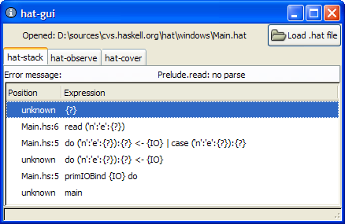
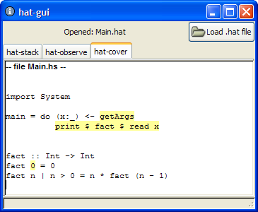

I have done a very small amount of work on Hat. I have compiled Hat for Windows, and am writing a GUI for Hat.
 Download from here.
All hat utilities are available and seem to work apart from:
In addition, there is also hat-make, which is windows only hmake -hat alternative.
Extract the contents of the .zip file into a folder preserving directory structure.
Add the folder containing hat-make to your %PATH% variable, this is 100% required, even if you give the explicit path to hat-make when you use it.
Make sure ghc is available on your system and has been added to the %PATH%.
cd to the directory containing your Haskell source
hat-make Main.hs main arguments hat-stack Main.hat hat-observe Main.hat etc.
I have tested the programs, and they all work quite well - I have not run into any limitations beyond those which happen on Hat on Linux as well.